Japan Itinerary
13-Days Itinerary: Golden Route
☀️ OSAKA
Friday 23rd Saturday 24th : Travel
- Departure London 11h35, Friday 23rd.
- Arrival Osaka 12h10, Saturday 24th.
- Go to the hotel, drop stuff, and get out in the city.
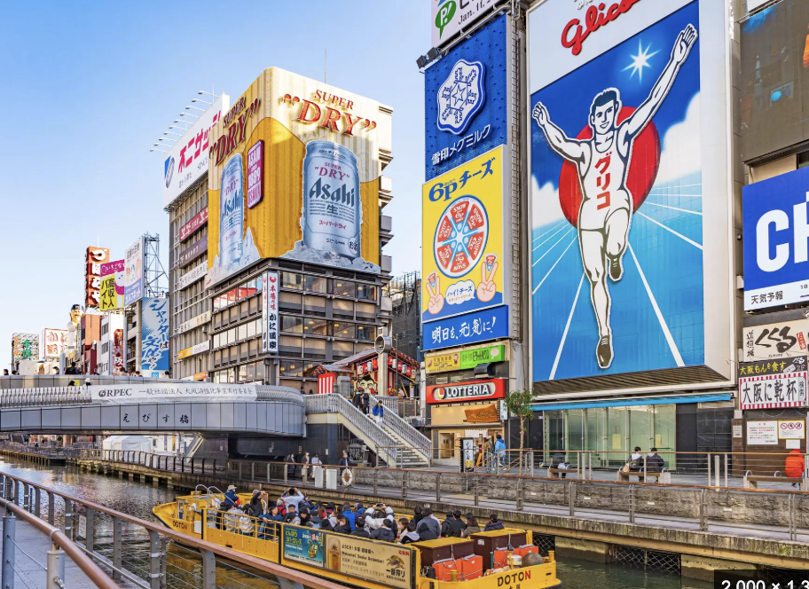
Sunday 25th : Osaka Castle and Umeda Sky Building
- Osaka Castle area.
- Dotonbori, Amerikamura, then Namba Yasaka Shrine (close to hotel so can be done the day before)
- Umeda Sky Building (views before sunset).
- ✨ Don’t miss a photo with the iconic Glico sign
Amerikamura: Walk about 10 minutes west and you’ll land in this trendy pocket filled with street art, vintage stores and laid-back cafés
Namba Yasaka Shrine: Keep going for another 15-minute walk to reach this quirky shrine with its massive lion-head stage
💡 OSAKA LOOP BUS TIP The Osaka Loop Bus services Osaka Castle, Umeda Sky Building, Dotonbori and Tsutenkaku, a simple way to link multiple sights without juggling trains
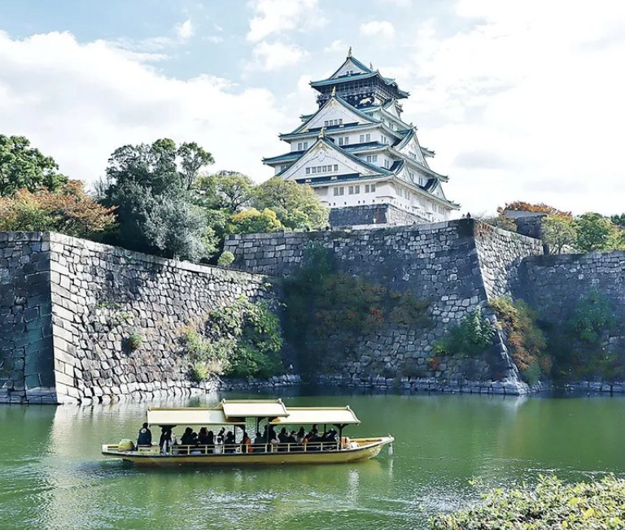
Monday 26th : Kuromon Ichiba Market and Shinsekai
- Kuromon Ichiba Market.
- Shinsekai and Tsutenkaku, rub Billiken’s feet.
- Shitenno ji.
- Spa World public bath.
- 🍰 Grab Rikuro’s famous cheesecake in Namba
- ✨ SHINSEKAI Kuromon Ichiba Market: From Namba, hop on a short 10-minute train ride to this food lover’s paradise, known for fresh seafood and street snacks
Shinsekai & Tsutenkaku Tower: It’s an easy 15-minute walk from here to explore this retro neighbourhood and spot Osaka’s famous tower
✨ TENNOJI Shitenno-ji Temple: From Shinsekai, walk around 20 minutes or take a quick train to reach Japan’s oldest Buddhist temple
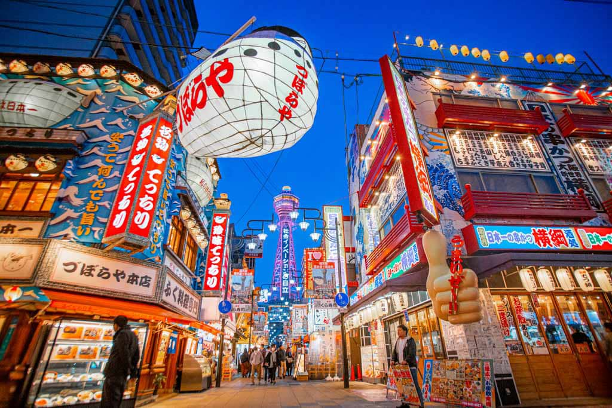
Tuesday 27th : En route to Kyoto
- Morning train to Kyoto.TO BOOK
- Nishiki Market
- Eikando Temple + Nanzen-ji
- Fushimi Inari (go higher for quieter trails.)
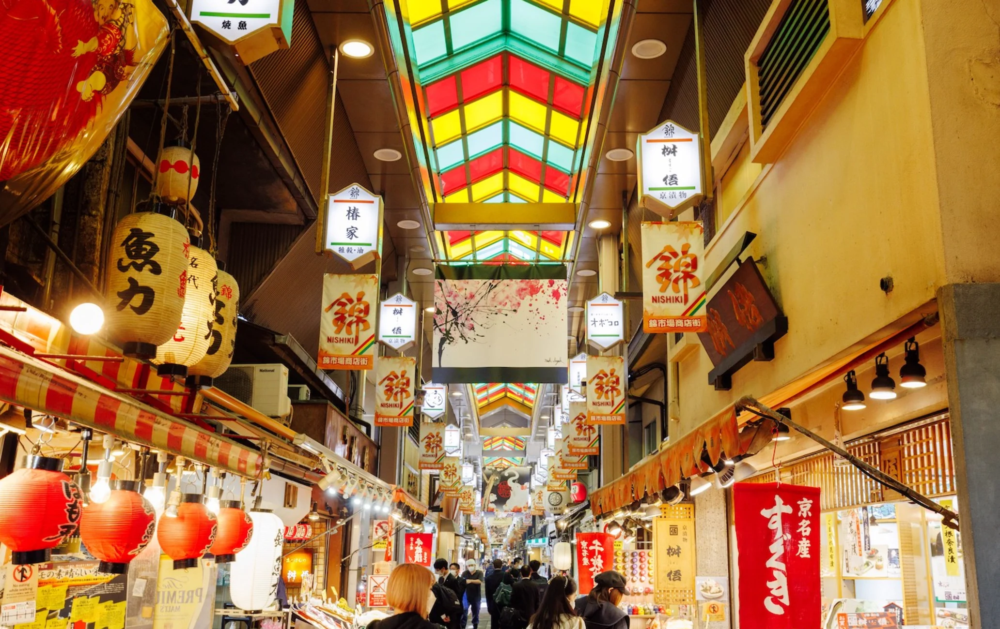
Wednesday 28th : Temple and TeamLab.
- Kiyomizu-dera temple
- Sannenzaka and Ninenzaka
- TeamLab Booked at 2 PM.
- Evening: Go around Higashiyama area
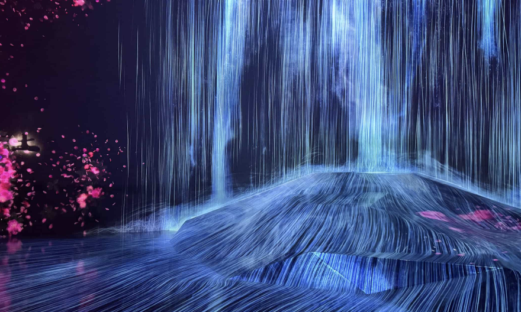
Thursday 29th : Bamboo Grove and Tea Ceremony.
- Early morning: Arashiyama Bamboo Grove before crowds.
Latest 8AM
From the forest, walk to Tenryu-ji, one of the most important temple in Kyoto.
After, walk along Katsura River, all the way to Senko-ji temple. - Kimono Tea ceremony.
Booked at 1.30 PM.
1H journey from Senko-ji temple. - Evening: Slow wander in Gion. Discover Pontocho Alley and get one of the best Ramen at Ramen Sen No Kaze
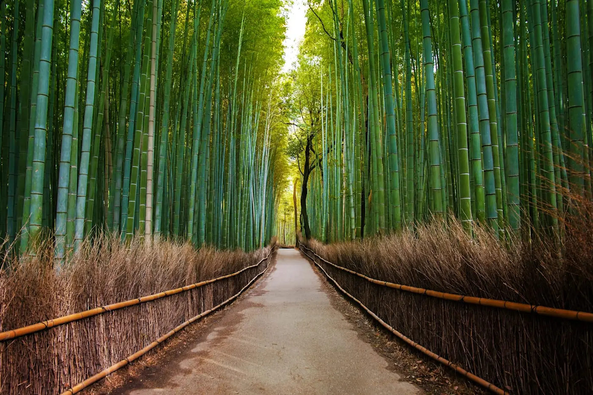
Friday 30th : Hakone, onsen city.
- Kyoto - Odawara train. Train booked at 10.33 AM
- Odawara - Hakone train. TO BOOK Once at Hakone station, take a cab to go drop the suitcase in the hotel (~20min) and come back around Hakone station.
- Yoshiike Ryokan’s Japanese Garden. From 1 PM only.
- Hakone-Yumoto Shopping Street.
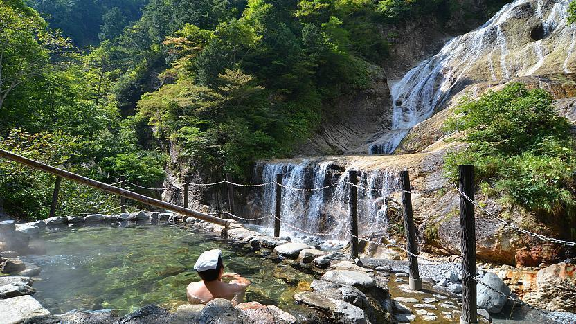
Saturday 31st :
- Hakone Ropeway - aerial cable car.
- Hakone - Odawara TO BOOK
- Odawara - Tokyo Bullet train booked at 2.14 PM
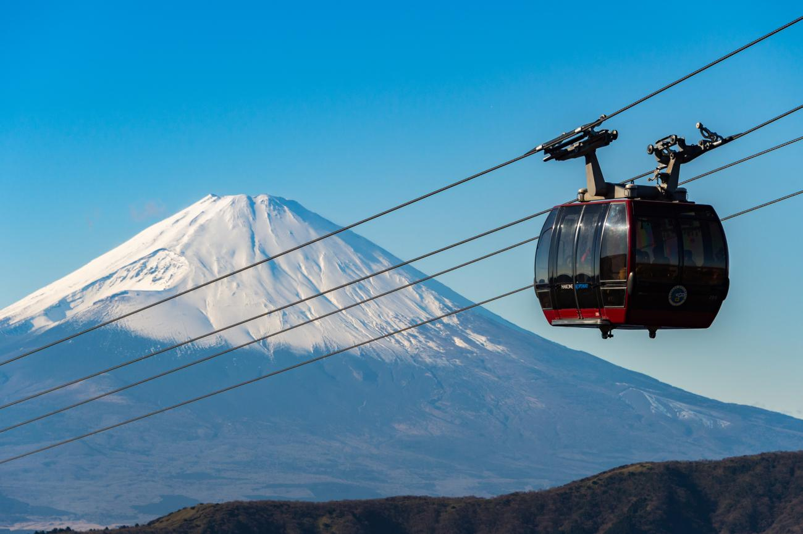
Sunday 1st : Shimokitazawa and Shinjuku streets.
- Shimokitazawa. Thrift stores open late morning; café lunch here.
- Shinjuku Gyoen Park.
- Shinjuku streets. Neon of Kabukicho, plus the free government building viewing deck.
- Omoide Yokocho & Golden Gai. Yakitori alleys and tiny bars for a final izakaya night.
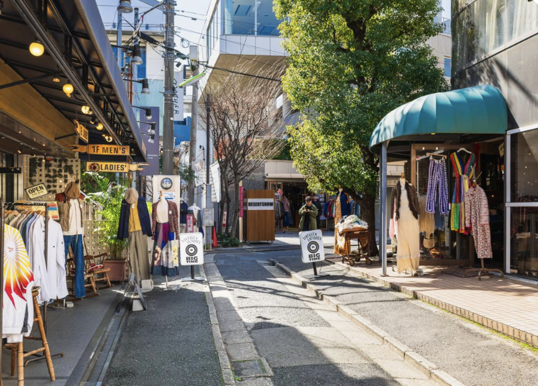
Monday 2nd : Senso-ji and Kitchen Street.
- Sensi-jo. Beat the crowds, it's lovely and quiet early.
- Nakamise Dori. Snack street leading to the temple; shops open around 10 AM.
- Kappabashi Kitchen Street. Many shops shut on Sundays
- Sumida Park. Riverside walk with views of the Skytree.
- Akihabara. Neon, arcades and anime shops; best after dark.
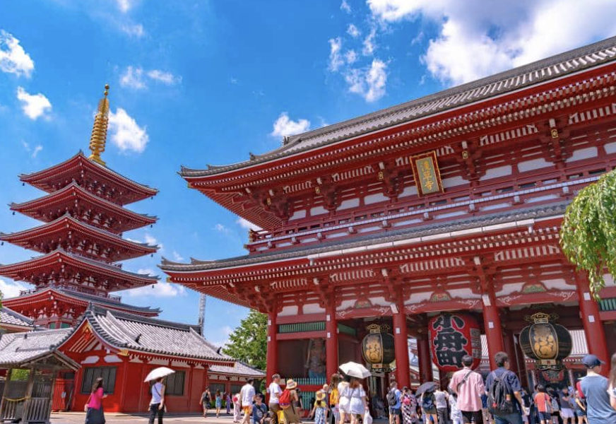
Tuesday 3rd : Meiji Jingu and Shibuya.
- Meiji Jingu Go early for a calm walk through the forest approach.
- Yoyogi Park.
- Takeshita Street.Crepes, quirky fashion and lunch in Harajuku.
- Shibuya Crossing Watch it from above at a Café, then cross it.
- Shibuya Sky. Tickets booked at 18.20 PM.
- Izakaya at Nonbei Yokocho. Tiny bars in a lantern-lit alley by Shibuya station.
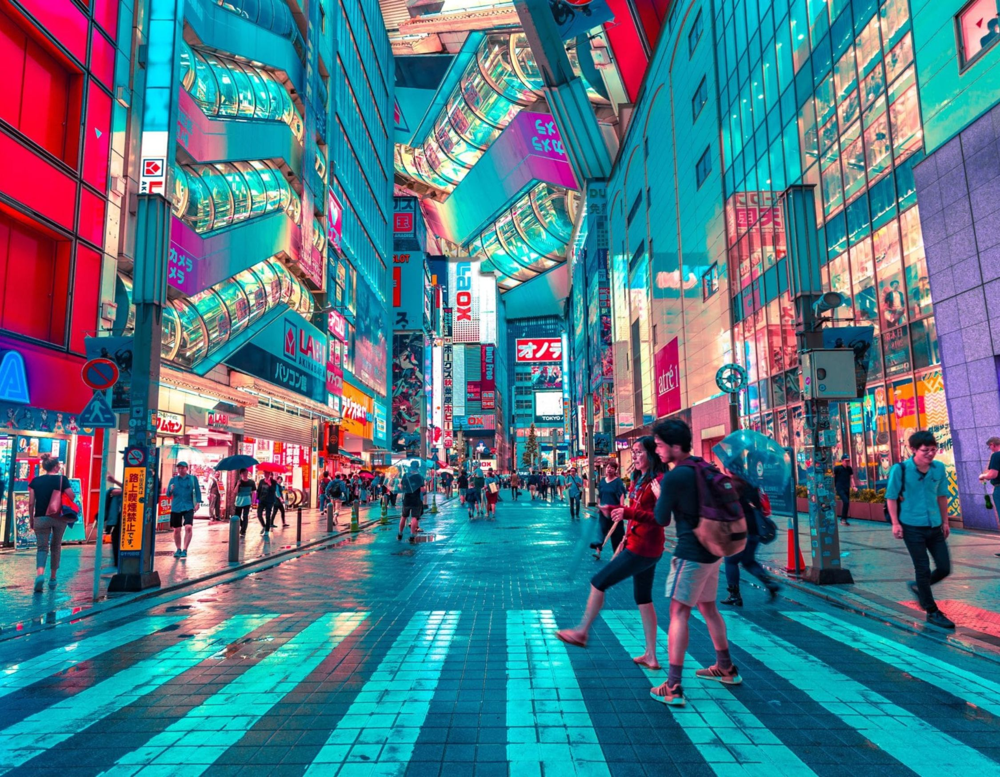
Wednesday 4th : Tsukiji Outer Market and Imperial Palace.
- Tsukiji Outer Market. Breakfast on sushi and street food.
- Ginza district.
- Imperial Palace East Gardens.Usually closed on Mondays and Fridays.
- Toky Station Area. Restored red-brick station and Character Street.
Izakaya in Yurakucho: atmospheric bars tucked under the railway arches.
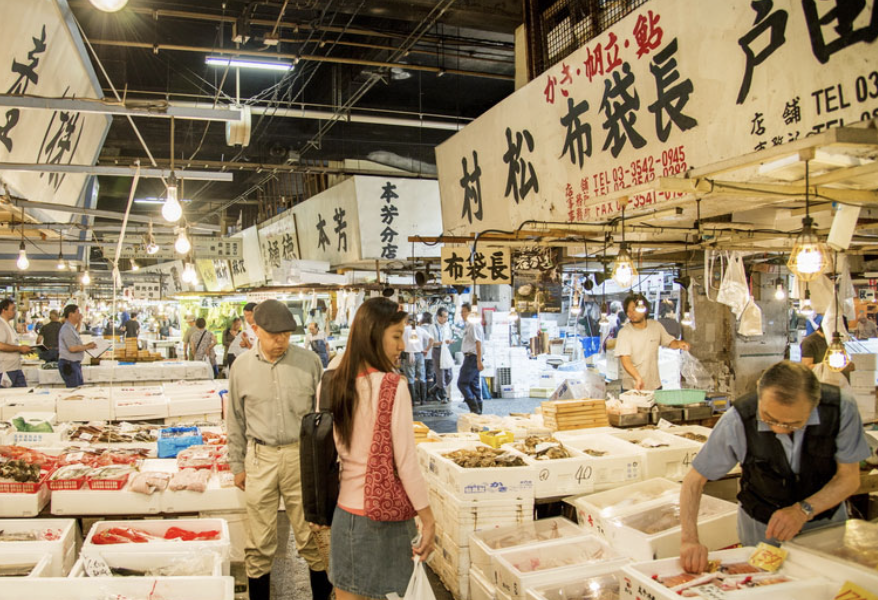
Thursday 5th: Kamakura day trip.
- Train Tokyo-Kamakura. ~ 1H trip
- Hokokuji Bamboo Grove and matcha tea in the temple garden.
- Great Buddha (Daibutsu), one of Japan’s most iconic statues Short bus or taxi from Hokokuji area.
- Lunch: Kamakura old town.
- Tsurugaoka Hachimangu (samurai heart of Kamakura)
Ponds, bridges, and shrine buildings, deep samurai history. - The Scenic train - Enoden Line
Sit on the right-hand side if possible. The train: passes between houses hugs the coastline feels very old-school and charming - Kamakura Beach (short walk). Get off near Hase or Yuigahama for a quick seaside walk.
- Enoshima Island: continue on the Enoden to Enoshima, walk across the bridge onto the island
Enoshima Shrine complex, Small paths, sea views, caves, Climb up for panoramic views, Sunset here is beautiful on a clear day
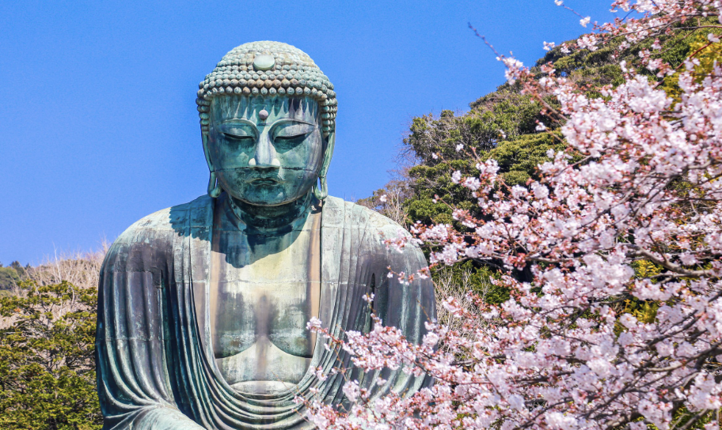
Friday 6th : Shopping Day.
- Souvenirs and shopping day 🛍️🤑. 10.33 AM
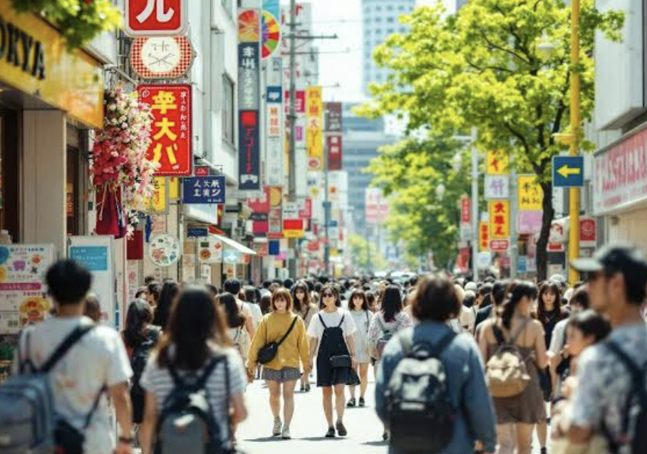
Saturday 7th and Sunday 8th : Travel back.
- Departure Tokyo 16:55, Saturday 7th.
- Arrival London 06:30, Sunday 8th.
🚄 Travel Tip
The Shinkansen connects these hubs. A 14-day JR Pass is recommended for seamless travel between Tokyo, Kyoto, Osaka, and Hiroshima/Day Trips.